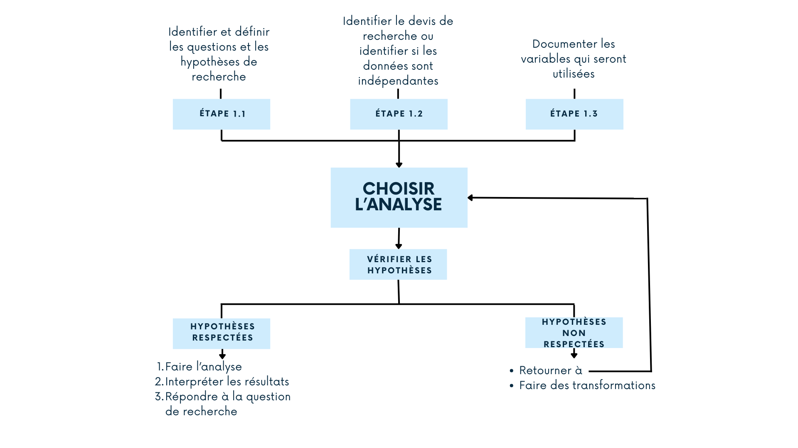
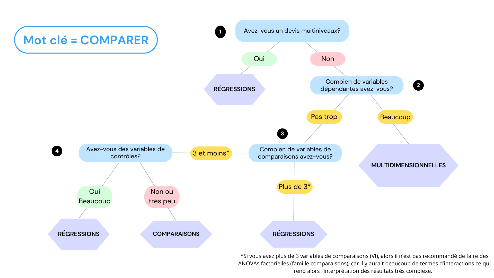
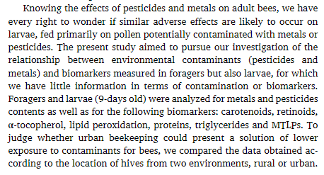

| Test | Quand | Devis | Type de variable | Normalité |
|---|---|---|---|---|
| Test-t | Comparer 2 groupes | Transversal (Indépendant) | VD continue | Oui |
| Test de Mann-Whitney | Comparer 2 groupes | Transversal (Indépendant) | VD continue | Non |
| Test-t apparié | Comparer 2 groupes | Dépendants | VD continue | Oui |
| Tests des rangs signés de Wilcoxon | Comparer 2 groupes | Dépendants | VD continue | Non |
| ANOVA | Comparer 3 groupes et plus ou plusieurs facteurs (2 VI et plus) | Transversal (Indépendant) | VD continue | Oui |
| Test de Kruskal-Wallis | Comparer 3 groupes et plus | Transversal (Indépendant) | VD continue | Non |
| ANCOVA | Comparer des groupes en contrôlant pour d’autres variables | Transversal (Indépendant) | VD continue | Oui |
| MANOVA | Comparer des groupes sur plusieurs VD | Transversal (Indépendant) | VD continue | Oui |
| ANOVA à mesures répétées | Comparer 3 groupes et plus ou plusieurs facteurs (2 VI ou plus) | Dépendants | VD continue | Oui |
| ANOVA de Friedman | Comparer 3 groupes et plus | Dépendants | VD continue | Non |
| Test du Khi-carré ou Fisher | Comparer deux variables nominales (binaires pour Fisher) | Transversal (Indépendant) | VD nominale ou binaire | NSP |
| Test de MacNemar | Comparer deux variables nominales | Dépendants | VD nominale ou binaire | NSP |
| etc. |
Comment choisir un test statistique
“Quelle analyse statistique dois-je faire?” est une des questions le plus souvent posée en consultation statistique. Cette page vous présente ma stratégie générale pour faire un choix.
Notez qu’il doit exister d’autres stratégies et que la plupart des livres de statistiques discute de ce sujet ou présente un tableau de décision. Cette page se veut un peu plus générale.
Question importante
Comment sait-on que l’analyse qui a été choisie est la bonne?
Réponse
- Elle répond à la question ou à l’hypothèse de recherche.
- Les hypothèses ou postulats de l’analyse sont respectés. Autrement dit, j’ai le droit de faire cette analyse.
1. Méthode globale
Le premier choix d’analyse dépend de trois éléments:
- Les questions et les hypothèses de recherche.
- Le devis de recherche.
- Les variables ou mesures utilisées.
Une fois le premier choix effectué, vous devez vérifier si les hypothèses spécifiques à l’analyse choisie sont respectées. Si elles le sont, alors vous pouvez effectuer l’analyse. Si elles ne le sont pas, vous devez recommencer le choix ou transformer vos données lorsque cette option est possible.
La figure suivante illustre la méthode.

Regardons plus en détails chaque étape.
1.1 Identifier les hypothèses de recherche
L’idée ici est de décortiquer votre objectif de recherche et vos questions de recheche en une ou plusieurs hypothèses précises. Plus elles seront précises et plus le choix sera facile.
Petit truc
Posez-vous la question “Qu’est-ce je veux trouver/voir/conclure de ma recherche?”.
Ensuite, posez-vous la même question pour chaque hypothèse.
Lors de l’identification des hypothèses de recherche, essayez d’utiliser les mots clés suivants:
- Comparer ou tester une différence entre des groupes, des traitements ou des temps de mesures.
- Analyser, expliquer ou prédire (le mot prédire n’induit pas une causalité) un phénomène avec une ou plusieurs mesures.
- Créer ou valider un score composite.
- Classifier les unités expérimentales (ou les participants) selon leur réponses à des variables.
Notez qu’il se peut que vos objectifs ne puissent être exprimés avec ces mots-clés. Ceci veut généralement dire que vous avez besoins d’analyses plus spécifiques (exemples: analyses de survie, analyses causales, etc.).
Important
On remarque dans la littérature récente que certains des modèles de régressions ou des modèles d’équations structurelles complexes sont vus comme une preuve de causalité. C’est faux! Si vous voulez prouver la causalité, vous devez obligatoirement faire des analyses causales.
1.2 Identifier le devis de recherche
La plupart des analyses statistiques ont pour hypothèse l’indépendances des données. Il est donc important de savoir si vous avez de la dépendance dans vos données de recherche. Cette information se trouve dans votre devis.
Il existe trois types de devis:
Devis transversal
Vous avez mesurer vos unités expérimentales ou vos participants une seule fois dans le temps. Ces données sont indépendantes.

Devis longitudinal
Vous avez mesurer vos unités expérimentales plusieurs fois dans le temps, il peut donc y avoir de la dépendance dans vos données.

Devis multiniveaux
Vos unités expérimentales sont nichées dans un (ou plusieurs) niveau supérieur qui génère une dépendance (exemple: des élèves dans des classes).

Important
Vous pouvez avoir un mélange de devis pour les différentes questions à l’intérieur d’un même objectif de recherche.
Exemple 1: dans un essai randomisé avec un pré-test et un post-test et des groupes contrôle et expérimental, si vous testez la différence entre les groupes seulement au pré-test, votre hypothèse est transversale.
Exemple 2: vous pourriez avoir un devis à la fois longitudinal et multiniveaux
1.3 Documenter les variables
Pour chaque hypothèse de recherche, avez-vous des variables dépendantes (VD) et indépendantes (VI)? Si c’est le cas, combien de variables dépendantes et indépendantes avez-vous?
Ensuite, il faut documenter le type de variable pour chacune d’entres elles. Il existe trois types de variables:
- Continue: variable mesurée sur une échelle (exemple: l’âge, le poids, une échelle de motivation, le rendement scolaire, etc.)
- Nominale: variable ayant des catégories non ordonnées (exemples: le genre, le groupe, le lieu de résidence, etc.)
- Ordinale: variable ayant des catégories ordonnées comme les échelles de Likert.
Si vous avez plusieurs variables dépendantes dans le même objectif, vous pouvez documenter leur nombre, si elles sont mesurées sur la même échelle et si elles sont théoriquement corrélées.
Important
Toutes les informations sur le type des variables se trouve dans le dictionnaire de variable. Si vous n’en avez pas, je vous recommande d’en faire un. Notez que pour les utilisateurs du logiciel SPSS, on peut considérer la vue des variables de la fenêtre de données comme le dictionnaire de variables s’il est assez précis.
2. Choisir l’analyse
Pour faciliter le choix, j’ai regroupé les analyses statistiques dans 6 grandes catégories générales:
- Les comparaisons entre groupes, traitements ou temps de mesure.
- Les régressions au sens large du terme.
- Les analyses multidimensionnelles ou multivariées.
- Les analyses de classification (“person-centered analysis”).
- La validation de questionnaire (psychométrie).
- Les autres analyses.
À partir des hypothèses de recherche et des mots clés identifiés ci-dessus (comparer/tester une différence, analyser/expliquer/prédire, Créer/valider un score ou classifier), vous pouvez utiliser l’arbre de décision suivant pour identifier la catégories d’analyse appropriée.

Si votre mot clé est comparer ou tester une différence, l’arbre ci-dessous peut être utilisé.

Une fois la catégorie d’analyse identifiée, vous pouvez vous référez aux tableaux ci-dessous pour le choix final.
2.1 Comparaisons
Voici les principales analyses de comparaisons et leurs conditions d’utilisations.
2.2 Régressions
Voici les principales analyses de régressions et leurs conditions d’utilisations.
| Test | Quand | Devis | Type de variable |
|---|---|---|---|
| Corrélation (Pearson, Spearman, etc.) | Lien entre deux variables | transversal | tout sauf nominale |
| Régression linéaire | Analyser une VD avec une ou plusieurs VI | transversal | VD continue et normale |
| Régression logistique | Analyser une VD avec une ou plusieurs VI | transversal | VD binaire |
| Régression linéaire généralisée | Analyser une VD avec une ou plusieurs VI | transversal | VD autre que continue ou binaire |
| Régression multiniveaux (ou effets mixtes) | Analyser une VD avec une ou plusieurs VI | longitudinal ou multiniveaux | tous |
| Équations structurelles (SEM) | Analyser plusieurs VD (observées ou non) avec une ou plusieurs VI | tous | tous |
| Analyses de médiation | Effet médiateur | tous | tous |
| Analyses de modération | Effet modérateur | tous | tous |
| Analyses de trajectoires (ou courbes de croissance) | Analyser une VD avec le temps comme VI (et peut-être d'autres variables) | longitudinal | tous |
| Analyses de trajectoires latentes | Analyser une VD avec le temps comme VI (et peut-être d'autres variables) | longitudinal | tous |
| Modèles autorégressifs croisés | Analyser plusieurs VD en régressant chaque mesures dans le temps | longitudinal | tous |
| etc. |
2.3 analyses multidimensionnelles
Voici les principales analyses multidimensionnelles et leurs conditions d’utilisations.
| Test | Quand | Devis | Type de variable |
|---|---|---|---|
| Analyses en composantes principales (ACP) | Réduction de dimensions | transversal | continue ou binaires |
| Corrélations canoniques | Corrélations entre deux groupes de variables | transversal | continue ou binaires |
| Analyses de correspondances multiples (ACM) | Réduction de dimensions | transversal | nominales et binaires |
| Analyse des redondances (RDA) | Effet d'une matrice X sur une matrice Y (réduction de dimension) | transversal | continue ou binaires |
| Analyse discriminante | Réduction de dimension pour différencier des groupes (suit souvent une MANOVA) | transversal | continue ou binaires pour la réduction, nominale pour le groupe |
| Analyse de facteurs multiples | Un mélange d'ACP et ACM (grosso modo) | transversal | tous |
| etc. |
2.4 Création et validation de score
Voici les principales analyses de création et validation d’un score ou d’une échelle et leurs conditions d’utilisations.
| Test | Quand | Devis |
|---|---|---|
| Analyses factorielles exploratoire (EFA) | Lorsque l'échelle n'a jamais été validée | transversal |
| Alpha de Cronbach (ou autre, e.g. Krippendorf) | Cohérence interne | transversal |
| Analyses factorielles confirmatoires (CFA) | Pour valider une structure existente | tous (MCFA pour données dépendantes) |
| Analyses d'invariance | Suite de la validation par CFA | tous |
| etc. |
2.5 Classification
Voici les principales analyses de classification et leurs conditions d’utilisations.
| Test | Quand | Devis |
|---|---|---|
| Analyses de clusters | Classification de sujets | transversal |
| Classes latentes ou profils latents (LCA ou LPA) | Classification de sujets | transversal |
| Analyses de transition latentes (LTA) | Comparer les classification (LCA ou LPA) dans le temps | longitudinal |
| Analyses LCGA (latent class growth analysis) ou LCGM | Classifier les sujets selon leur trajectoires dans le temps | longitudinal |
| Modèles GMM (Generalized mixture models) | Classifier les sujets selon leur trajectoires dans le temps | longitudinal |
| etc. |
2.6 Autres analyses
Voici quelques autres types d’analyses.
| Test | Quand |
|---|---|
| Analyses de survie | Analyser la fin d'un état (la mort) |
| Analyses causales | Pour prouver la causalité |
| Séries chronologiques | Analyse d'une série temporelle |
| Analyses bayesiennes | Une autre façon de modéliser les données, avec utilisitation d'une distribution a priori |
| etc. |
Important
Généralement, lorsque les analyses choisies proviennent de la catégorie autres, il n’est pas nécessaire d’utiliser ce document, car les hypothèses sont très spécifiques et tout le processus de recherche (planification du devis, demande de subvention, etc) est spécifiquement construit autour du type d’analyse.
2.7. Mélange de catégories
Il existe des analyses qui mélangent les catégories:
- Régression + multidimensionnelles (réduction de dimensions): RDA ou ACP régression
- Comparaison + multidimensionnelles (réduction de dimensions): analyse discriminante
- Classification + multidimensionnelles (réduction de dimensions): classification hiérarchique sur composantes principales (CHCP ou HCPC en anglais)
- etc.
2.8 Et si plusieurs options sont possible?
Si vous avez plusieurs options possibles, vous pouvez évaluer vos options selon les critères suivants:
- Les hypothèses des tests (exemple: la taille de l’échantillon, les distributions des variables, les données manquantes, etc.)
- La culture de votre domaine de recherche.
3. Un exemple classique
Imaginez que vous avez un devis quasi-expérimental dans lequel on veut tester l’efficacité d’un traitement. Nous avons deux groupes (contrôle et expérimental) et deux temps de mesures (pré-test et post-test).
Voici quelques exemples d’hypothèses qu’on pourrait vouloir tester dans ce cas:
- Est-ce que les deux groupes sont différents pour ma variable dépendante (continue et normale) au pré-test?
- Est-ce que le nombre de garçons et de filles est différent dans mes deux groupes?
- Est-ce que les deux groupes sont différents pour ma VD (continue et normale) au post-test lorsque je contrôle pour la valeur de la VD au pré-test?
- Est-ce que la différence entre le temps (comparaison, variable binaire et répétée) est la même pour les deux groupes (variable binaire, indépendante)?
Voici les analyses qui seraient faites pour chacun des cas (en prenant pour acquis pour l’exemple que les hypothèses des analyses sont respectées):
- Test-t
- Test du khi carré (\(\chi^2\))
- ANCOVA
- ANOVA à mesures répétées à deux facteurs, le temps qui est répété et le groupe qui est fixe
4.1 Un exemple de la littérature
Voici un premier exemple extrait de la littérature.
Référence: Mahé, C., Jumarie, C., & Boily, M. (2021). The countryside or the city: Which environment is better for the honeybee?. Environmental Research, 195, 110784.
Voici une capture d’écran de leur objectif de recherche:

Les auteures veulent voir les liens entre les contaminants (beaucoup de variables continues), les biomarqueurs (beaucoup de variables continues) et le lieu (variable binaire, rural ou urbain) chez les abeilles et le larves d’abeilles.
Analyses possibles: On pourrait choisir une ACP ou une AFM ici.
Un indice Les 3 groupes de variables sont conceptuellement différents et le lieu est binaire.
L’analyses choisie ici est l’analyse de facteurs multiples (AFM).
4.1 Un autre exemple de la littérature
Voici un deuxième exemple extrait de la littérature.
Référence: Roy-Vallières, M., Lachapelle, J., Lemay, L., Bouchard, C., & Bigras, N. (2022). Children’s engagement in Quebec childcare centres: progression from 3 to 5 years old and predictor variables. Early Child Development and Care, 1-17.
Voici une capture d’écran de leur objectif de recherche:

Nous allons regarder seulement le premier objectif.
Les auteures veulent étudier l’évolution de l’engagement des enfants entre 3 ans et 5 ans. Elles ont comme hypothèse que des sous-groupes d’enfants sont présents dans la population par rapport à l’engagement (4 variables d’engagement, continues). Elles veulent évaluer la transition entre les sous-groupes entre 3 ans et 5 ans.
Voici un indice: Lorsqu’on suppose des sous-groupes, ça veut dire que les sujets de recherche peuvent être classés.
L’analyse choisie et l’analyse de transition latente (LTA).
Mot de la fin
En cas de doute ou si vous avez besoin d’aide pour le choix d’analyse, vous pouvez consulter votre statisticien.ne préféré.e!